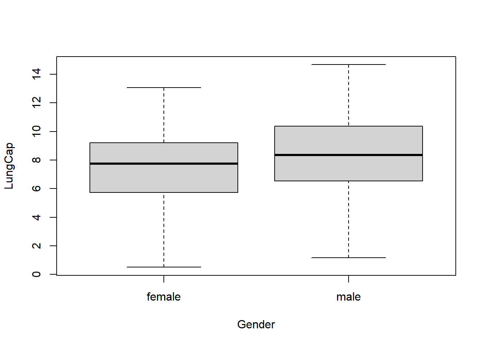
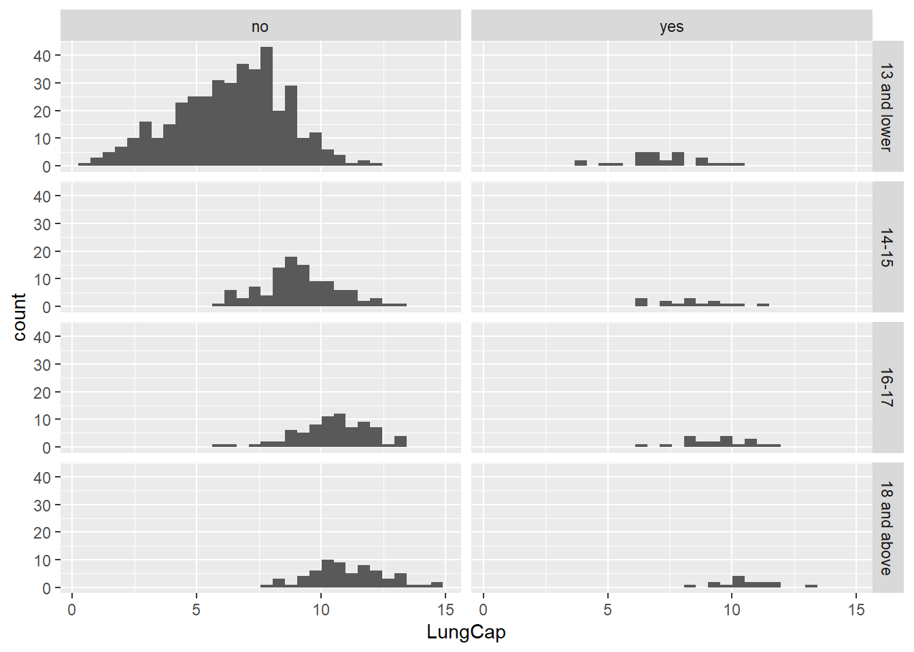

Code
knitr::opts_chunk$set(echo = TRUE)knitr::opts_chunk$set(echo = TRUE)library(readr)
library(ggplot2)
library(dplyr)
Attaching package: 'dplyr'The following objects are masked from 'package:stats':
filter, lagThe following objects are masked from 'package:base':
intersect, setdiff, setequal, unionlibrary(readxl)df <- read_excel('_data/LungCapData.xls')
df# A tibble: 725 × 6
LungCap Age Height Smoke Gender Caesarean
<dbl> <dbl> <dbl> <chr> <chr> <chr>
1 6.48 6 62.1 no male no
2 10.1 18 74.7 yes female no
3 9.55 16 69.7 no female yes
4 11.1 14 71 no male no
5 4.8 5 56.9 no male no
6 6.22 11 58.7 no female no
7 4.95 8 63.3 no male yes
8 7.32 11 70.4 no male no
9 8.88 15 70.5 no male no
10 6.8 11 59.2 no male no
# … with 715 more rows
# ℹ Use `print(n = ...)` to see more rowshist(df$LungCap)
The distribution appears to be very similar to a normal distribution, according to the histogram.
The boxplots below show the probability distributions grouped by Gender.
boxplot(LungCap~Gender, data=df)
Looks like males have a slightly higher lung capacity than females.
df %>%
group_by(Smoke) %>%
summarize(Mean = mean(LungCap))# A tibble: 2 × 2
Smoke Mean
<chr> <dbl>
1 no 7.77
2 yes 8.65Surprisingly, the mean lung capacity is higher for smokers than it is for non-smokers.
# convert Age to categorical variable.
df <- mutate(df, AgeGroup = case_when(Age <= 13 ~ "13 and lower", Age == 14 | Age == 15 ~ "14-15", Age == 16 | Age == 17 ~ "16-17", Age >= 18 ~ "18 and above"))
arrange(df, Age)# A tibble: 725 × 7
LungCap Age Height Smoke Gender Caesarean AgeGroup
<dbl> <dbl> <dbl> <chr> <chr> <chr> <chr>
1 5.88 3 55.9 no male no 13 and lower
2 0.507 3 51.6 no female yes 13 and lower
3 1.18 3 51.9 no male no 13 and lower
4 4.7 3 52.7 no male no 13 and lower
5 5.48 3 52.9 no male no 13 and lower
6 1.02 3 47 no female no 13 and lower
7 2 3 51 no female no 13 and lower
8 1.68 3 51.9 no male no 13 and lower
9 4.08 3 53.6 no male yes 13 and lower
10 1.45 3 45.3 no female no 13 and lower
# … with 715 more rows
# ℹ Use `print(n = ...)` to see more rows# construct histogram.
ggplot(df, aes(x = LungCap)) +
geom_histogram() +
facet_grid(AgeGroup~Smoke)`stat_bin()` using `bins = 30`. Pick better value with `binwidth`.
Majority seem to be non-smokers, and looks like non-smokers seem to have higher lung capacity.
class(df$AgeGroup)[1] "character"df$AgeGroup <- as.factor(df$AgeGroup) #converting to factor
# construct table.
df %>% select(Smoke, LungCap, AgeGroup) %>% group_by(AgeGroup, Smoke) %>% summarise(mean(LungCap))`summarise()` has grouped output by 'AgeGroup'. You can override using the
`.groups` argument.# A tibble: 8 × 3
# Groups: AgeGroup [4]
AgeGroup Smoke `mean(LungCap)`
<fct> <chr> <dbl>
1 13 and lower no 6.36
2 13 and lower yes 7.20
3 14-15 no 9.14
4 14-15 yes 8.39
5 16-17 no 10.5
6 16-17 yes 9.38
7 18 and above no 11.1
8 18 and above yes 10.5 The mean lung capacity for smokers aged 13 and under is greater than that of non-smokers in the same age group which is different from expectation. Non-smokers have higher mean lung capacity for ages 14-15, 16-17 and 18 and above. Either there may be an error or extreme outlier in the data for smokers aged 13 and under.
cor(df$LungCap,df$Age)[1] 0.8196749cov(df$LungCap,df$Age)[1] 8.738289Lung capacity and age have a high positive correlation of 0.82, meaning that as age increases, lung capacity also does. The covariance is a little more challenging to interpret; the positive number indicates a positive association between lung capacity and age, but because covariance varies from negative infinity to infinity, it is difficult to judge the strength of the relationship. In most situations, I would choose to employ correlation.
df1 <- c(0:4)
Inmate_count <- c(128, 434, 160, 64, 24)
IP<- data_frame(df1, Inmate_count)Warning: `data_frame()` was deprecated in tibble 1.1.0.
Please use `tibble()` instead.
This warning is displayed once every 8 hours.
Call `lifecycle::last_lifecycle_warnings()` to see where this warning was generated.IP <- mutate(IP, Probability = Inmate_count/sum(Inmate_count))
IP# A tibble: 5 × 3
df1 Inmate_count Probability
<int> <dbl> <dbl>
1 0 128 0.158
2 1 434 0.536
3 2 160 0.198
4 3 64 0.0790
5 4 24 0.0296IP %>%
filter(df1 == 2) %>%
select(Probability)# A tibble: 1 × 1
Probability
<dbl>
1 0.198The probability is about 19.75%.
df2 <- IP %>%
filter(df1 < 2)
sum(df2$Probability)[1] 0.6938272The probability that a randomly selected inmate has fewer than 2 prior convictions is 0.6938272
df3 <- IP %>%
filter(df1 <= 2)
sum(df3$Probability)[1] 0.891358The probability that a randomly selected inmate has 2 or fewer prior convictions is 0.891358.
df4 <- IP %>%
filter(df1 > 2)
sum(df4$Probability)[1] 0.108642The probability that a randomly selected inmate has more than 2 prior convictions is 0.108642.
IP <- mutate(IP, X = df1*Probability)
expectedvalue<- sum(IP$X)
expectedvalue[1] 1.28642The expected value for the number of prior convictions is 1.2864198. We can round this to 1.
var1 <-sum(((IP$df1-expectedvalue)^2)*IP$Probability)
var1[1] 0.8562353sqrt(var1)[1] 0.9253298The variance and the standard deviation for prior convictions are 0.8562353 and 0.9253298 respectively.